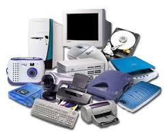
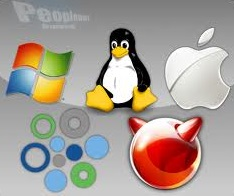

Inforconsultas - Perguntas e Respostas
Informática: Conceitos e Aplicações
Gostaria de compartilhar um pouco da obra, pelo qual esse site foi inspirado e criado com
baseado nos exercícios encontrado neste livro.
No site você vai encontrar perguntas e respostas de acordo com os temas abordados com as
categorias classificados. O livro, pelo qual esse site
foi inspirado, é indicado como material de apoio aos cursos de Informática e disciplinas afins
dos demais cursos. Pode ser utilizado, junto com esse site, por professores (como uma diretriz
básica para a disciplina), alunos (fonte de pesquisa para os principais conceitos) e profissionais
de todas as áreas, que necessitem e precisam adquirir conhecimentos específicas sobre Informática.
Aborda conceitos básicos de informática, características dos componentes que formam o hardware,
definição e classificação dos softwares, redes, arquiteturas, infra-estrutura e serviços de Internet,
segurança de dados, autenticação, criptografia, antivírus e firewall. Os vídeos referenciados foram
selecionados e anexados aos tópicos com a intensão de ajudar na compreensão e aprendizado de
todos aqueles que estão na busca do conhecimento e do aprendizado. Com isso, esse site veio
para somar com outros sites e blogs existente com educação da educação Se quiser saber mais sobre
esta obra e adquirir, Clique Aqui.
Parte 1 - Apresenta os conceitos básicos
Conceitos Básicos em TI
Para quem deseja estudar, se preparando para concursos ou apenas conhecer os sistemas de computação
com mais detalhes e proficionalismo. São abordados os sistemas de numeração (decimal, binário,
hexadecimal e octal) e suas aplicações; conversões de sistemas de numeração; operações
aritméticas com números binários; evolução da computação e suas contribuições para os dias
de hoje; as estimativas das tecnologias futuras; conceito de dados e informação; de que forma
os dados e as informações são divididas ; componentes básicos de um computador; ciclo de
processamento; representação da informação (números, textos, imagens e sons) e quais são os
tipos de computadores e quais as suas principais características.
Parte 2 - Explicar as características dos componentes que formam o hardware

Características do Hardware
O que as pessoas enxergam nos sistemas de computação. Trata de álgebra
booleana e seus tipos; portas lógicas e suas divisões; arquitetura básica dos processadores
e suas características durante a realização das tarefas; instruções
e o ciclo de máquina; o que diferencia o CISC do RISC e quais as suas principais características;
arquiteturas para melhoria de performance do processador (Superescalar, Pipelining, Hyperthreading);
processadores comerciais; memórias (ROM, RAM, Cache, seus modelos e as suas principais
diferença no processomento da informação); barramentos e seus padrões de fabricação
adotados pelas indústrias; dispositivos de armazenamento e suas telecnologias
(discos e fitas magnéticas, CDs e DVDs); futuro do armazenamento de dados; dispositivos
periféricos (entrada e saída de dados) e para serve cada um deles.
Parte 3 - Classificar os softwares dos sistemas de computação

Software e Suas Classificações
Aqui explica a classificação e funcionamento dos sistemas operacionais;
multiprocessamento; sistemas operacionais multitarefas x monotarefa;
sistemas de arquivos; interrupções; interface com o usuário; modelos
de sistemas operacionais; linguagens de programação; compilação x
interpretação; armazenamento de dados; arquivos; métodos de acesso
a arquivos; sistemas de bancos de dados; modelos de bancos de dados
(relacional e orientado a objeto); sistemas gerenciadores de bancos
de dados; Data Warehouse; DataMining; sistemas de informação; Sistema de
Processamento de Transações (SPT) / Sistema de Informações Gerenciais
(SIG) / Sistema de Apoio à Decisão (SAD) / inteligência artificial /
sistemas especialistas / Sistema de Informações Executivas (SIE);
desenvolvimento de software; engenharia de software; métodos de
desenvolvimento de software (estruturado x orientado a objeto);
modelos de desenvolvimento de software; técnicas de desenvolvimento
de software (RAD, XP, RUP); UML e CMM.
Parte 4 - Abordar a comunicação de dados
Comunicação de Dados
As redes de computadores e suas propriedades; as características das transmissões de dados;
modulação; multiplexação; serviços de comunicação de dados (linhas-tronco,
DSL, redes de fibras ópticas); redes de computadores (LAN, MAN, WAN);
aplicações de redes; meios de comunicação e suas propriedades (cabos, fibra óptica, rádio
digital, satélite etc.); modelo ISO/OSI e suas funcionalidades; protocolos (TCP/IP, Frame
Relay, ATM etc.); redes LAN (topologias físicas, hardware, Ethernet,
Token Ring, LANs Virtuais); redes WAN (hardware, VPNs); sistemas
operacionais de rede e suas principais características; arquitetura de redes (cliente-servidor x Peer-to-Peer);
redes sem fio e planejamento e administração de redes.
Parte 5 - Destacar os principais detalhes referentes à Internet e sua evolução
A Internet e Sua Evolução
A história dos computadores e suas divisões, sua evolução e reconhecimento de voz e
Infraestrutura e serviços; transferência de informações (FTP); as variedades de comunicação
(correio eletrônico, e-mail, redes sociais, celular e muito mais.); serviços de informações multimídia (Web);
linguagens de programação para Web e suas principais caracterista e funções; comunicação via Web;
serviços de transferência de informação; serviços de informações multimídia; diferença da
Internet 2, Intranet e Extranet; deferença forma de comunicação entre os usuários.
Web Services; WAP e VoIP e como essas formas de tecnologia ajudaram na criação de outras
novas formas de ganhar dinheiro.
parte 6 - Tratar de segurança das informações
Segurança da Informação
Apresenta os fatores de risco para a segurança dos sistemas de computação mais comum;
acessos indevidos de inforções involuntário ou maliciosamente; segurança de programas cada vez
sofisticados e modernos. exemplos de alguns cuidados de devemos ter para manter os nossas
informações livre de pessoas mal intercionado.
(vírus, worms, cavalos de Troia, etc.); redes conectadas à Internet
(cookies, hackers x crackers, ataques de negação de serviço, spoofing,
sniffing etc.); rotina para proteção das informações; segurança física;
autenticação das informações; o que é criptografia e qual a importância desse meio de
segurança nos dias de hoje; os vários tipos antivírus e firewall e suas eficiências.